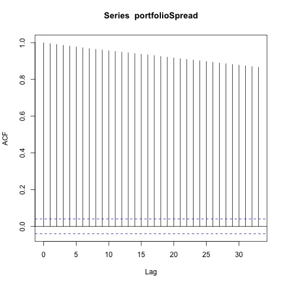
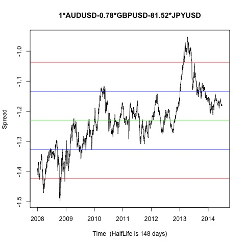

Johansen-Procedure "" "10pct" "5pct" "1pct" "r <= 2 |" 2.46 7.52 9.24 12.97 "r <= 1 |" 14.23 17.85 19.96 24.6 "r = 0 |" 32.3 32 34.91 41.07 "AUDUSD.l2" "GBPUSD.l2" "JPYUSD.l2" "constant" "AUDUSD.l2" 1 1 1 1 "GBPUSD.l2" -0.78 1.41 0.86 -1.09 "JPYUSD.l2" -81.52 -86.66 276.21 -101.94 "constant" 1.2 -2.22 -5.36 2.51
Augmented Dickey-Fuller Test p-value 0.131965252489392 